Gallery
FieldDock GUI:
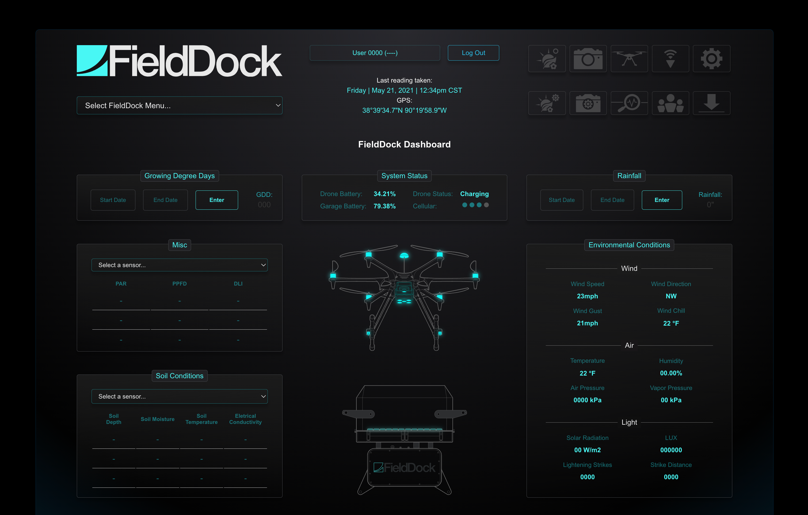
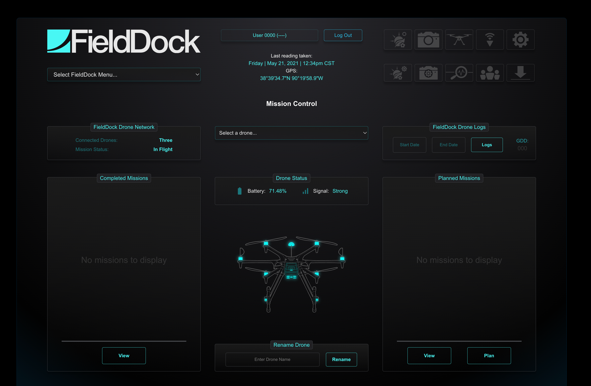
 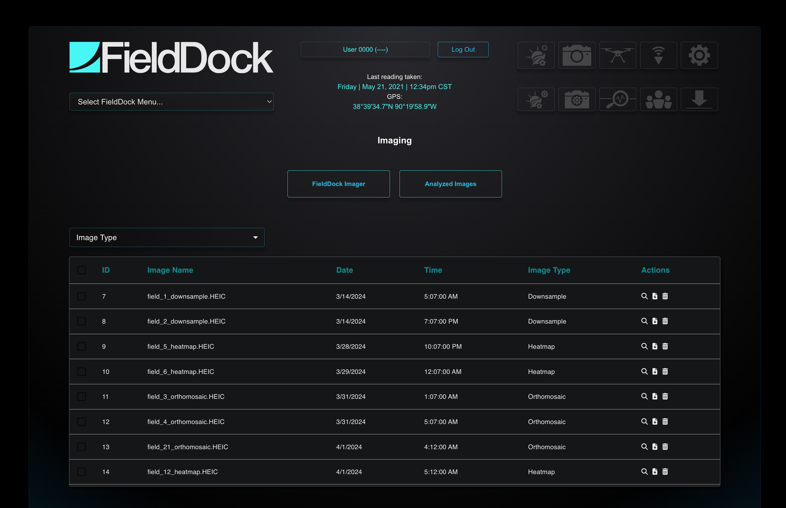
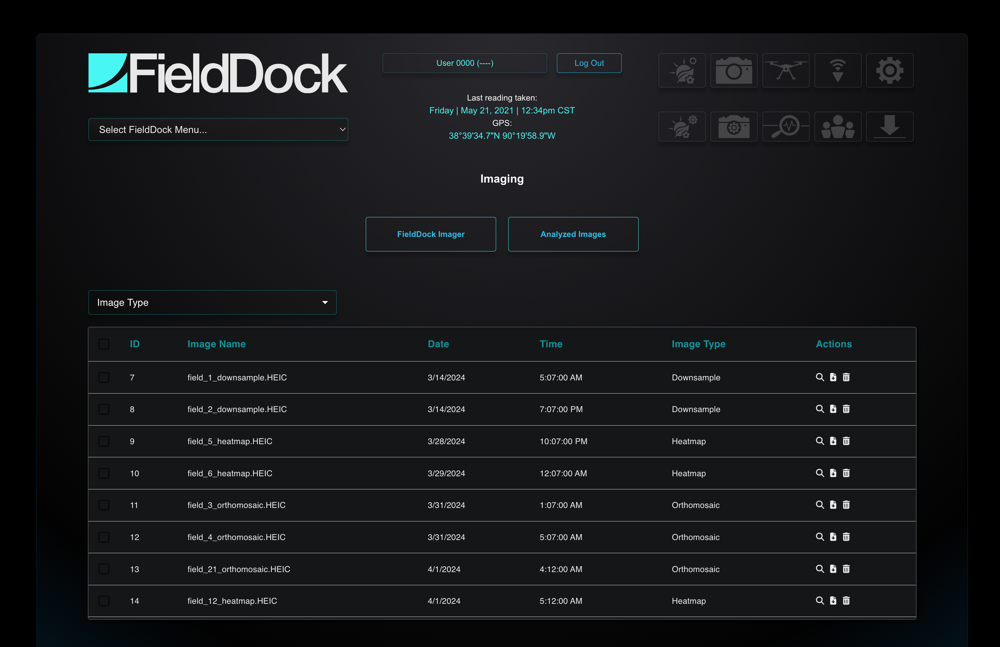
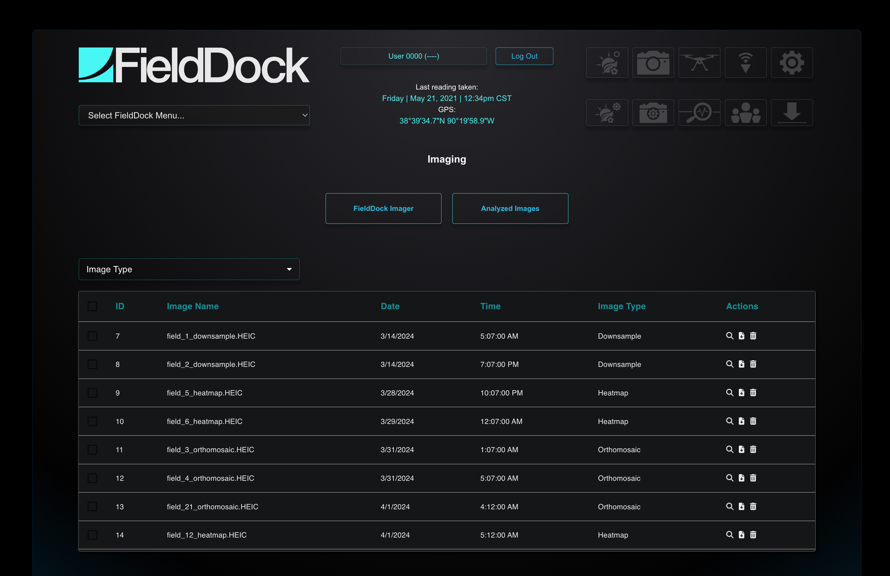
FieldDock Edge:
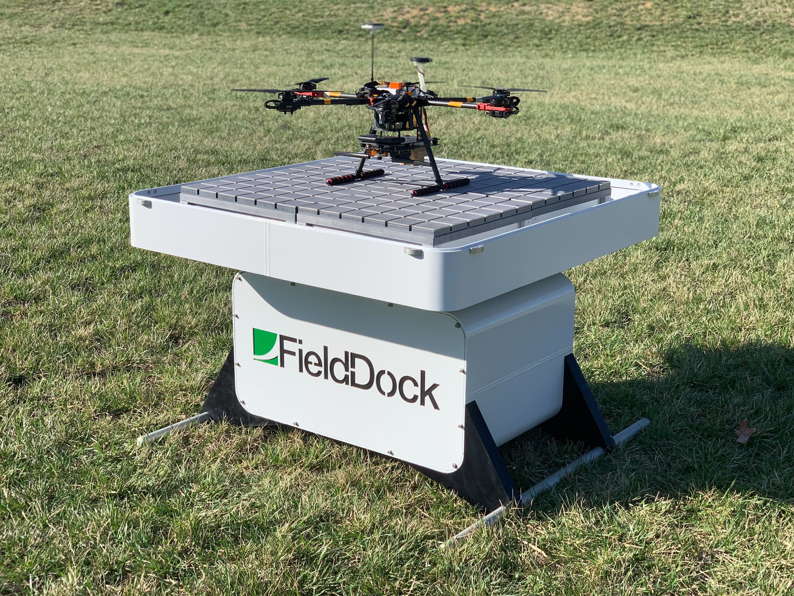
 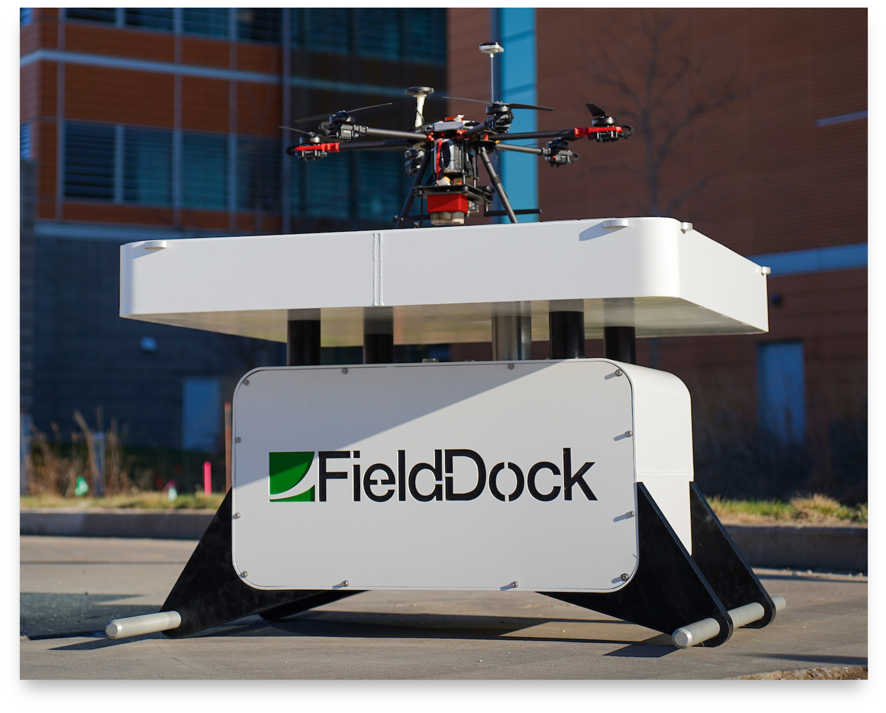
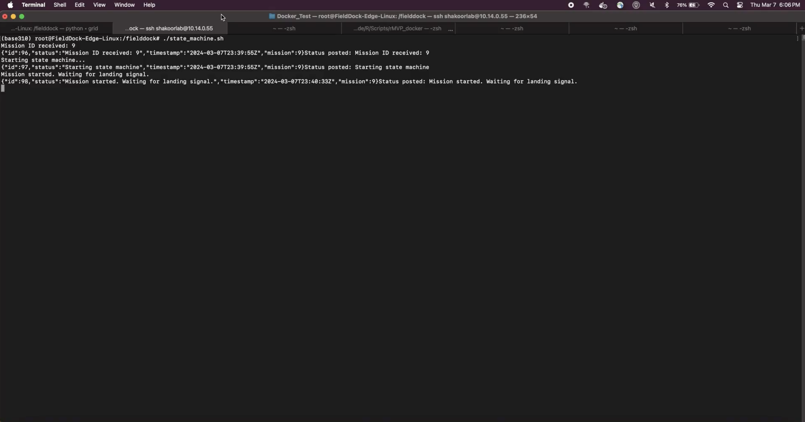
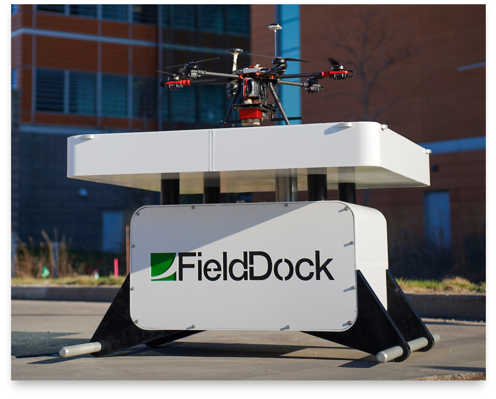
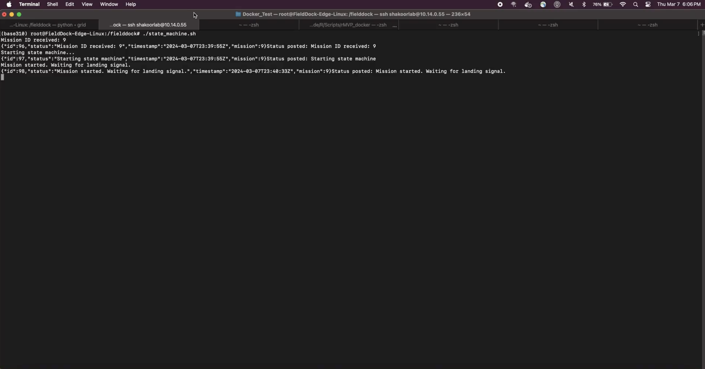
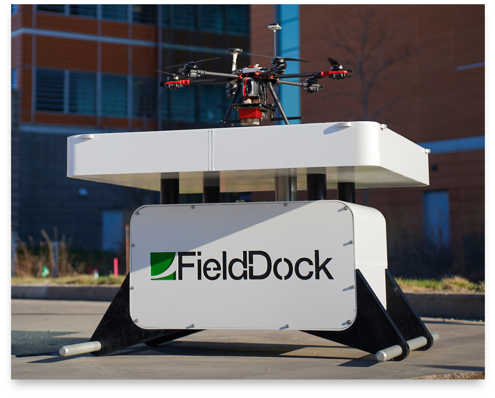
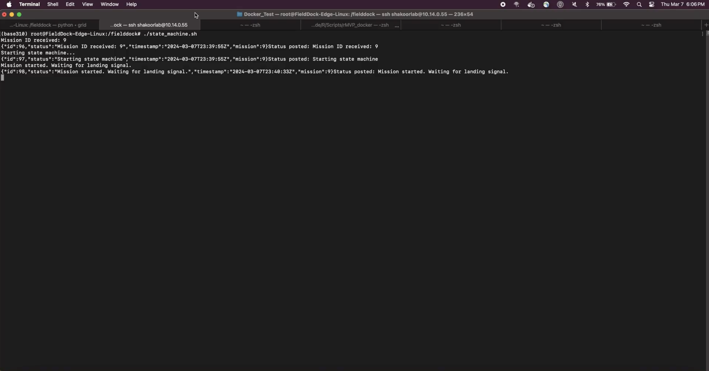
Mission
Empowering agriculture through innovation, FieldDock aims to revolutionize farm management and crop improvement by integrating autonomous UAVs, sensor networks, and advanced analytics into a cohesive, user-friendly platform.
Objectives
- Provide real-time, data-driven insights for precise crop performance tracking and management.
- Enhance agricultural efficiency and productivity through autonomous UAV monitoring and edge computing solutions.
- Foster sustainable farming practices by optimizing resource use and reducing environmental impact.
- Deliver intuitive, accessible tools for farmers and researchers to make informed decisions and drive agricultural advancements.